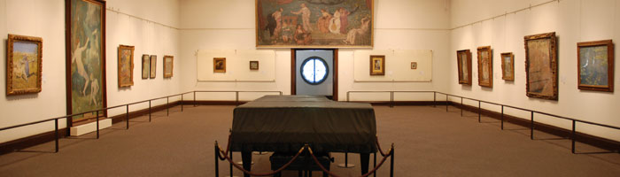
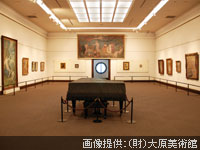
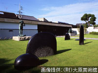
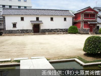
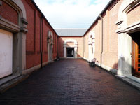

OHARA MUSEUM OF ART大原美術館

1930年（昭和5年）に日本で最初の近代西洋美術館で、倉敷を基盤に幅広く活躍した実業家大原孫三郎が、洋画家児島虎次郎が収集した西洋絵画の展示の為に造られました。
ギリシャ建築の神殿を模して、柱などがイオニックという形式で統一されています。
本館の他に、隣接して分館、工芸・東洋館があります。
本館

ギリシア・ローマ風の古典様式の門構えは開館当時と変わっておらず2体のロダン像が迎えてくれます。大原美術館設立時の作品を中心に児島虎次郎が収集した作品が展示されています。ルノワールやモネなどフランス印象派の作品やヨーロッパ、アメリカの現代美術の常設展示も行っています。
分館

1961年に建設された分館の前にはロダン・ムーアの作品が立っています。日本の近代・現代美術と明治～現在の美術を集めた館で、日本洋画家や彫刻などが展示されています。平成21年4月下旬までは工事の為、地下展示室に限り閉館しています。
工芸・東洋館

江戸時代の米倉を改装した館は工芸館と東洋館で構成され、工芸館には、陶芸や木版画、型染の作品などが展示されています。東洋館には、児島虎次郎氏が収集した中国古美術コレクションを中心に先史時代～唐代までの東アジアの古美術が展示されています。
児島虎次郎記念館

倉敷アイビースクエア内にある別館で、1908年（明治39年）に建てられた倉庫を利用した記念館には、児島虎次郎室とオリエント室に分かれており、児島氏の作品と児島氏が収集した古代エジプト美術を中心に、中世イスラム美術、先史イラン美術が約500点展示されています。
モネの睡蓮
創立70周年を迎えた2000年にフランス・ジヴェルニーにあるモネの日本庭園から株分けされたもので、クロード・モネの描いた「睡蓮」の子孫です。春～夏にかけてピンクと黄色の花を咲かせます。
取材協力：（財）大原美術館
公式サイトをみる
一覧に戻る